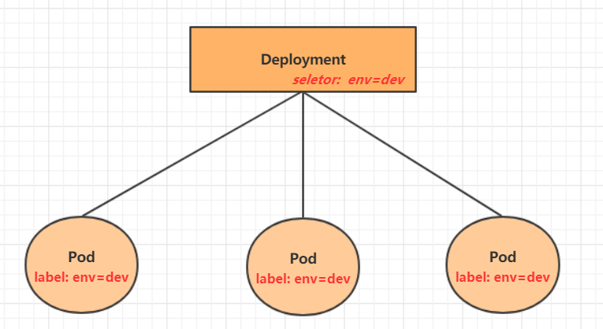

k8s
K8s
本文章用作个人记录备忘，大部分资料来自网上，可能会有不完善的地方
配置
参考:
1. 虚拟机
使用两台22.04 LTS的ubuntu server虚拟机
- 镜像：Get Ubuntu Server | Download | Ubuntu
- 安装参考：Ubuntu 20.04 live server版安装(详细版) - 运维密码 - 博客园 (cnblogs.com)
虚拟机配置
- 以下三个配置在不同主机应该不同
- ip：192.168.139.131，基于22端口进行ssh连接
- mac：00:0c:29:68:c9:29
- product_uuid：d39c4d56-ecf6-5683-efe9-4b22f968c929
2. 安装docker、容器运行时、k8s
（1）docker
1 | |
daemon.json可以修改为如下：
1 | |
（2）容器运行时
1.24以下版本的k8s可以忽略这一部分
1 | |
（3）安装k8s
1 | |
运行
1. 启动及准备工作
1 | |
如果要在各个节点都运行k8s命令，则各个节点都需要配置，只不过工作节点是复制主结点的。不然会报错：localhost:8080 was refused
1 | |
2. 加入从节点
1 | |
3. 重置
1 | |
4. 其它
- 查看日志：
journalctl -xeu kubelet - 查看pod：
kubectl get pod -n kube-system - 查看node：
kubectl get nodes - 查看端口：
ss -lntu
5. 可能遇到的问题
-
从节点加入时卡在：[preflight] Running pre-flight checks
- 可能是时区不一致
- 也可能是需要重新生成token
kubeadm token create --ttl 0 --print-join-command
-
su无效：
- 运行
sudo passwd root重新设置一下密码即可
- 运行
-
coredns-6d8c4cb4d-99g8n一直没建好
-
有容器为evict：
- 资源利用率超过85%。（可用 df -h 看一下磁盘占用率）
-
“/run/flannel/subnet.env: no such file or directory“：
- 启动时没设置
--pod-network-cidr=10.244.0.0/16 - 注意上面指定的网段不要跟自己真实的内网网段产生冲突，否则会造成机器之间无法ping通的问题
- 启动时没设置
-
-
failed to find plugin “xxx“ in path [/opt/cni/bin]]
- 在https://github.com/containernetworking/plugins/releases里面找到对应的版本，下载后解压到/opt/cni/bin之后重启kubectl即可（版本好像不能超过1）
- 我是两台机器，一台正常，一台报上述错误，将一台/opt/cni/bin下的文件复制到另一台就好了
-
一直循环unhealth
短时间内一直循环是正常的，太久的话可能是如下问题
- cgroup不一致或端口没开放
- 第一次使用时出现：“Failed to run kubelet” err=“failed to run Kubelet: misconfiguration: kubelet cgroup driver: “cgroupfs” is different from docker cgroup driver: “systemd””
- 如果已经确认cgroup对应上了，则根据[完全卸载ubuntu上的k8s - CSDN文库](https://wenku.csdn.net/answer/trsjf3ftv4#:~:text=完全卸载ubuntu上的k8s 1 停止 Kubernetes 服务： sudo systemctl stop,6 删除相关的配置目录和文件： … 7 清理 iptables 规则： )卸载k8s后，重新下载就行了（其实都没有卸载干净，因为下载时一下就完成了，可能是purge命令将某些配置文件删干净了）
- 交换区没关导致，kubelet服务没启动（sudo vim /etc/fstab # ubuntu22.04貌似注释了没用）
- sudo swapoff -a
-
k8s遇 The connection to the server :6443 was refused_6443端口-CSDN博客
-
可能是硬件与系统时间不一致（个人认为，这种情况可能性较小，下述仅作记录）
1
2
3
4
5
6
7
8
9
10
11
12
13
14
15
16
17
18
19
20
21
22
23date #确认系统时间
hwclock #确认硬件
#如果此时系统时间和硬件时间同步，但明显不是服务器重启之前的时间。请继续往下看。否则就不是本情况，请查看其他案例。
date -s "2022-12-08 12:00:00" #首先进行系统时间的修改，此处为举例：系统时间修改为2022年12月8日 中午12点整
hwclock --hctosys #然后用硬件时钟同步系统时钟
timedatectl |awk -F":" '/synchronized/{print $2}' #检查ntp时间同步是否就绪，一般等待20-30分钟左右后会显示yes
kubectl get node #检查是否还会报错
# 5、时间同步
#查看时区，时间
date
#先查看时区是否正常，不正确则替换为上海时区
timedatectl set-timezone Asia/Shanghai
#安装ntpdate，联网同步时间
sudo apt-get install ntpdate
sudo export PATH=$PATH:/sbin:/usr/sbin
sudo ntpdate cn.pool.ntp.org
# 或者手动调整
date -s "2022-12-08 12:00:00"
# 系统时间和硬件时间同步
hwclock --hctosys
-
卸载
1 | |
- 最纯净-Ubuntu系统下如何卸载kubernetes(k8s)-2023最新_ubuntu卸载k8s-CSDN博客
- 卸载k8s：https://blog.csdn.net/LONG_Yi_1994/article/details/127139637
- 完全卸载ubuntu上的k8s - CSDN文库
虚拟机克隆
基于VMware克隆Ubuntu22.04虚拟机
-
右键虚拟机-管理-克隆
-
选择选项后克隆
-
解决mac地址一样的问题：虚拟机设置-网络适配器-高级-生成
-
解决ip地址一样的问题（ubuntu）：
sudo vim /etc/netplan/00-installer-config.yaml，设置对应网卡-
# This is the network config written by 'subiquity' network: version: 2 ethernets: ens33: dhcp4: no addresses: [192.168.139.135/24] routes: - to: default via: 192.168.139.2 # 网关务必设置好，我就是这里浪费了大量时间 nameservers: addresses: - 8.8.8.8 - 114.114.114.1141
2
3
4
5
6
7
8
9
10
11
12
13
14
15
16
17
18
19
20
21
22
23
24
25
26
27
28
29
30
31
2. `sudo netplan apply`
5. 修改主机名
- `sudo vim /etc/hostname`
- `sudo vim /etc/hosts`
6. 修改用户名（这里直接新建一个）
```shell
# 添加用户
sudo adduser node2
# 设置密码
sudo passwd node2
# 查看原用户所属的组
id node1 # uid=1000(node1) gid=1000(node1) groups=1000(node1),4(adm),24(cdrom),27(sudo),30(dip),46(plugdev),110(lxd),999(docker)
# 加入各组，以获得各种权限
sudo gpasswd -a node2 adm
sudo gpasswd -a node2 cdrom
sudo gpasswd -a node2 sudo
sudo gpasswd -a node2 dip
sudo gpasswd -a node2 plugdev
sudo gpasswd -a node2 lxd
sudo gpasswd -a node2 docker
# 把文件迁移过去
sudo mv /home/node1/* /home/node2/
# 删除原用户
sudo deluser node1
-
-
配置/etc/hosts
-
systemctl restart docker
systemctl restart kubelet
使用
参考（转载）：
学习kubernetes的核心，就是学习如何对集群上的==Pod、Pod控制器、Service、存储==等各种资源进行操作
0. 小试牛刀
1 | |
k8s中pod删除不了的原因和正确的删除方法_k8s pod删除不了-CSDN博客
1. yaml使用
（1）语法
- 大小写敏感
- 使用缩进表示层级关系
- 缩进不允许使用tab，只能用空格
- 缩进的空格数不重要，只要相同层级的元素左对齐即可
#表示注释\
（2）数据类型
- 纯量：字符串、布尔值、整数、浮点数、Null(~)、时间、日期
- 对象：键值对的集合（又叫映射、哈希、字典）
- 数组：又称序列、列表
1 | |
注意事项
冒号后面加一个空格
如果需要将多段yaml配置放在一个文件中，中间要使用
---分隔可以用如下网址将yaml文件转化为json，同时也可以检验yaml格式是否正确
2. 资源管理方式
-
命令式对象管理：直接使用命令去操作kubernetes资源
1
kubectl run nginx-pod --image=nginx:1.17.1 --port=80 -
命令式对象配置：通过命令配置和配置文件去操作kubernetes资源
1
kubectl create/patch -f nginx-pod.yaml -
声明式对象配置：通过apply命令和配置文件去操作kubernetes资源
1
kubectl apply -f nginx-pod.yaml
| 类型 | 操作对象 | 适用环境 | 优点 | 缺点 |
|---|---|---|---|---|
| 命令式对象管理 | 对象 | 测试 | 简单 | 只能操作活动对象，无法审计、跟踪 |
| 命令式对象配置 | 文件 | 开发 | 可以审计、跟踪 | 项目大时，配置文件多，操作麻烦 |
| 声明式对象配置 | 目录 | 开发 | 支持目录操作 | 意外情况下难以调试 |
2.1 命令式对象管理
kubectl命令
kubectl是kubernetes集群的命令行工具，通过它能够对集群本身进行管理，并能够在集群上进行容器化应用的安装部署。kubectl命令的语法如下：
1 | |
- comand：指定要对资源执行的操作，例如create、get、delete
- type：指定资源类型，比如deployment、pod、service
- name：指定资源的名称，名称大小写敏感
- flags：指定额外的可选参数
1 | |
操作
kubernetes允许对资源进行多种操作，可以通过–help查看详细的操作命令
经常使用的操作有下面这些：
| 命令分类 | 命令 | 翻译 | 命令作用 |
|---|---|---|---|
| 基本命令 | create | 创建 | 创建一个资源 |
| edit | 编辑 | 编辑一个资源 | |
| get | 获取 | 获取一个资源 | |
| patch | 更新 | 更新一个资源 | |
| delete | 删除 | 删除一个资源 | |
| explain | 解释 | 展示资源文档 | |
| 运行和调试 | run | 运行 | 在集群中运行一个指定的镜像 |
| expose | 暴露 | 暴露资源为Service | |
| describe | 描述 | 显示资源内部信息 | |
| logs | 日志输出容器在 pod 中的日志 | 输出容器在 pod 中的日志 | |
| attach | 缠绕进入运行中的容器 | 进入运行中的容器 | |
| exec | 执行容器中的一个命令 | 执行容器中的一个命令 | |
| cp | 复制 | 在Pod内外复制文件 | |
| rollout | 首次展示 | 管理资源的发布 | |
| scale | 规模 | 扩(缩)容Pod的数量 | |
| autoscale | 自动调整 | 自动调整Pod的数量 | |
| 高级命令 | apply | rc | 通过文件对资源进行配置 |
| label | 标签 | 更新资源上的标签 | |
| 其他命令 | cluster-info | 集群信息 | 显示集群信息 |
| version | 版本 | 显示当前Server和Client的版本 |
资源类型
kubernetes中所有的内容都抽象为资源，可以通过下面的命令进行查看:
1 | |
经常使用的资源有下面这些：
| 资源分类 | 资源名称 | 缩写 | 资源作用 |
|---|---|---|---|
| 集群级别资源 | nodes | no | 集群组成部分 |
| namespaces | ns | 隔离Pod | |
| pod资源 | pods | po | 装载容器 |
| pod资源控制器 | replicationcontrollers | rc | 控制pod资源 |
| replicasets | rs | 控制pod资源 | |
| deployments | deploy | 控制pod资源 | |
| daemonsets | ds | 控制pod资源 | |
| jobs | 控制pod资源 | ||
| cronjobs | cj | 控制pod资源 | |
| horizontalpodautoscalers | hpa | 控制pod资源 | |
| statefulsets | sts | 控制pod资源 | |
| 服务发现资源 | services | svc | 统一pod对外接口 |
| ingress | ing | 统一pod对外接口 | |
| 存储资源 | volumeattachments | 存储 | |
| persistentvolumes | pv | 存储 | |
| persistentvolumeclaims | pvc | 存储 | |
| 配置资源 | configmaps | cm | 配置 |
| secrets | 配置 |
下面以一个namespace / pod的创建和删除简单演示下命令的使用：
1 | |
2.2 命令式对象配置
命令式对象配置就是使用命令配合配置文件一起来操作kubernetes资源。
1） 创建一个nginxpod.yaml，内容如下：
1 | |
2）执行create命令，创建资源：
1 | |
此时发现创建了两个资源对象，分别是namespace和pod
3）执行get命令，查看资源：
1 | |
这样就显示了两个资源对象的信息
4）执行delete命令，删除资源：
1 | |
此时发现两个资源对象被删除了
总结:
命令式对象配置的方式操作资源，可以简单的认为：命令 + yaml配置文件（里面是命令需要的各种参数）
2.3 声明式对象配置
声明式对象配置跟命令式对象配置很相似，但是它只有一个命令apply。
1 | |
总结:
其实声明式对象配置就是使用apply描述一个资源最终的状态（在yaml中定义状态）
使用apply操作资源：
如果资源不存在，就创建，相当于 kubectl create
如果资源已存在，就更新，相当于 kubectl patch (更新)
扩展：kubectl可以在node节点上运行吗 ?
kubectl的运行是需要进行配置的，它的配置文件是$HOME/.kube，如果想要在node节点运行此命令，需要将master上的.kube文件复制到node节点上，即在master节点上执行操作：scp -r HOME/.kube node1: HOME/
使用推荐:
三种方式应该怎么用 ?
-
创建/更新资源 使用声明式对象配置 kubectl apply -f XXX.yaml
-
删除资源 使用命令式对象配置 kubectl delete -f XXX.yaml
-
查询资源 使用命令式对象管理 kubectl get(describe) 资源名称
3. 几种资源简介
3.1 Namespace
主要用来实习那多套环境的资源隔离或多租户的资源隔离
默认情况下，kubenetes机器中的所有pod都是可以互相访问的。如果不想让两个Pod之间互相访问，则可以将两个Pod划分到不同Namespace中，形成逻辑上的“组”，以方便不同的组的资源进行隔离使用和管理
可以通过kubernetes的授权机制，将不同的namespace交给不同租户进行管理，这样就实现了多租户的资源隔离。此时还能结合kubernetes的资源配额机制，限定不同租户能占用的资源，例如CPU使用量、内存使用量等等，来实现租户可用资源的管理。

k8s启动后默认创建的几个Namespace：
1 | |
3.3.1 查看
1 | |
3.3.2 其它
-
创建Namespace：kubectl create ns dev
-
删除Namespace：kubectl delete ns dev
-
配置方式：创建一个文件：ns-dev.yaml
1
2
3
4apiVersion: v1
kind: Namespace
metedata:
name: dev- 配置：kubectl create -f ns-dev.yaml
- 删除：kubectl delete -f ns-dev.yaml
3.2 Pod
Pod是k8s集群进行管理的最小单元，程序要运行必须部署在容器中，而容器必须存在于Pod中
kubenetes集群启动后，集群中的各个组件也都是以Pod方式运行的。
1 | |
-
创建pod并运行：kubectl run nginx --image=nginx:latest --port=80 --namespace dev
- 命令格式： kubectl run (pod名称) [参数]
- –image 指定Pod的镜像
- –port 指定端口
- –namespace 指定namespace
-
查看pod基本信息：kubectl get pod -n dev
-
查看pod详细信息：kubectl describe pod nginx -n dev
-
访问Pod：
- 获取podIP：kubectl get pods -n dev -o wide
- 创建service：kubectl create -f service-nodeport.yaml
- 查看service：kubectl get svc -n dev -o wide
-
删除Pod：kubectl delete pod nginx -n dev
- 如果Pod有控制器，上述命令删除后，又会产生一个pod，这是因为Pod是由Pod控制器（deployment）创建的，控制器会监视Pod状况，一旦发现Pod死亡，会立即重建，因此想要删除Pod，必须删除Pod控制器
- 查看pod控制器：kubectl get deploy -n dev # deploy是deployment的缩写
- 删除Pod控制器：kubectl delete deploy nginx -n dev
-
配置操作
1
2
3
4
5
6
7
8
9
10
11
12
13apiVersion: v1
kind: Pod
metadata:
name: nginx
namespace: dev
spec:
containers:
- image: nginx:latest
name: nginx-container
ports:
- name: nginx-port
containerPort: 80
protocol: TCP- 创建：kubectl create -f pod-nginx.yaml
- 删除：kubectl delete -f pod-nginx.yaml
注：网上挺多资料写到run在创建pod时，会自动创建deployment，但经过实践，v1.23.17版本是不会的，deployment需要单独创建
3.3 Label
Label是kubernetes系统中的一个重要概念。它的作用就是在资源上添加标识，用来对它们进行区分和选择。
Label的特点：
-
一个Label会以key/value键值对的形式附加到各种对象上，如Node、Pod、Service等等
-
一个资源对象可以定义任意数量的Label ，同一个Label也可以被添加到任意数量的资源对象上去
-
Label通常在资源对象定义时确定，当然也可以在对象创建后动态添加或者删除
可以通过Label实现资源的多维度分组，以便灵活、方便地进行资源分配、调度、配置、部署等管理工作。
一些常用的Label 示例如下：
- 版本标签：“version”:“release”, “version”:“stable”…
- 环境标签：“environment”:“dev”，“environment”:“test”，“environment”:“pro”
- 架构标签：“tier”:“frontend”，“tier”:“backend”
标签定义完毕之后，还要考虑到标签的选择，这就要使用到Label Selector，即：
Label用于给某个资源对象定义标识
Label Selector用于查询和筛选拥有某些标签的资源对象
当前有两种Label Selector：
-
基于等式的Label Selector
-
name = slave: 选择所有包含Label中key="name"且value="slave"的对象
-
env production: 选择所有包括Label中的key="env"且value不等于"production"的对象
-
-
基于集合的Label Selector
-
name in (master, slave): 选择所有包含Label中的key="name"且value="master"或"slave"的对象
-
name not in (frontend): 选择所有包含Label中的key="name"且value不等于"frontend"的对象
-
-
标签的选择条件可以使用多个，此时将多个Label Selector进行组合，使用逗号","进行分隔即可。例如：
-
name=slave，env production
-
name not in (frontend)，env production
-
命令
-
为pod资源打标签：kubectl label pod nginx-pod version=1.0 -n dev
-
为pod资源更新标签：kubectl label pod nginx-pod version=2.0 -n dev --overwrite
-
查看标签：kubectl get pod -n dev -l version=2.0 --show-labels # -l相当于筛选
-
删除标签：kubectl label pod nginx-pod -n dev tier- # tier为要删除的key
-
配置方式：
1
2
3
4
5
6
7
8
9
10
11
12
13
14
15
16
17apiVersion: v1
kind: Pod
metadata:
name: nginx
namespace: dev
labels:
version: "3.0"
env: "test"
spec:
containers:
- image: nginx:latest
name: nginx-container
ports:
- name: nginx-port
containerPort: 80
protocol: TCP
3.4 Deployment
在kubernetes中，Pod是最小的控制单元，但是kubernetes很少直接控制Pod，一般都是通过Pod控制器来完成的。Pod控制器用于pod的管理，确保pod资源符合预期的状态，当pod的资源出现故障时，会尝试进行重启或重建pod。
在kubernetes中Pod控制器的种类有很多，本章节只介绍一种：Deployment。
-
创建deployment，对应有3个相同pod
- kubectl create deployment nginx --image=nginx:latest --port=80 --replicas=3 -n dev
-
查看deployment的信息：
1
2
3jxlai@root-Z690-UD-AX-DDR4-V2:~$ kubectl get deploy -n dev
NAME READY UP-TO-DATE AVAILABLE AGE
nginx 3/3 3 3 47s- UP-TO-DATE：成功升级的副本数量
- AVAILABLE：可用副本的数量
-
查看deployment详细信息
- kubectl describe deploy nginx -n dev
-
删除：kubectl delete deploy nginx -n dev # 这会删除控制器下的所有pod
-
配置操作：
1
2
3
4
5
6
7
8
9
10
11
12
13
14
15
16
17
18
19
20
21
22
23
24
25apiVersion: apps/v1 # deployment
kind: Deployment
metadata:
name: nginx
namespace: dev
labels:
version: "3.0"
env: "test"
spec:
replicas: 3
selector:
matchLabels:
run: nginx # 基于此标签选择pod
template: # pod
metadata:
labels:
run: nginx
spec:
containers: # container
- image: nginx:latest
name: nginx-container
ports:
- name: nginx-port
containerPort: 80
protocol: TCP-
对应图像：

-
在K8S v1.18.0以后，–replicas已弃用 ,推荐用 deployment 创建 pods
3.5 Service
虽然每个Pod都会分配一个单独的Pod IP，然而却存在如下两问题：
Pod IP 会随着Pod的重建产生变化
Pod IP 仅仅是集群内可见的虚拟IP，外部无法访问
这样对于访问这个服务带来了难度。因此，kubernetes设计了Service来解决这个问题。
Service可以看作是一组同类Pod对外的访问接口。借助Service，应用可以方便地实现服务发现和负载均衡。

3.5.1 集群内Service
- 暴露service：
- kubectl expose deploy nginx --name=svc-nginx1 --type=ClusterIP --port=80 --target-port=80 -n dev
- 查看service：
- kubectl get svc svc-nginx1 -n dev -o wide
这里产生了一个CLUSTER-IP，这就是service的IP，在Service的生命周期中，这个地址是不会变动的,可以通过这个IP访问当前service对应的POD
3.5.2 集群外部可访问的Service
上面创建的Service的type类型为ClusterIP，这个ip地址只用集群内部可访问,如果需要创建外部也可以访问的Service，需要修改type为NodePort
- 暴露service：
- kubectl expose deploy nginx --name=svc-nginx2 --type=NodePort --port=80 --target-port=80 -n dev
- 通过 kubectl get svc svc-nginx2 -n dev -o wide 可知，暴露的端口为 31487
- 结合自己的ip（这里为192.168.1.104），可知访问对应网址，进而访问服务
其它
-
删除service：kubectl delete svc svc-nginx-1 -n dev
-
配置方式：
1
2
3
4
5
6
7
8
9
10
11
12
13
14apiVersion: v1
kind: Service
metadata:
name: svc-nginx
namespace: dev
spec:
clusterIP: 10.108.74.152 #固定svc的内网ip
ports:
- port: 80
protocol: TCP
targetPort: 80
selector:
run: nginx
type: ClusterIP
4. Pod详解
4.1 Pod介绍
每个Pod中都可以包含一个或者多个容器，这些容器可以分为两类：
-
用户程序所在的容器，数量可多可少
-
Pause容器，这是每个Pod都会有的一个根容器，它的作用有两个：
-
可以以它为依据，评估整个Pod的健康状态
-
可以在根容器上设置Ip地址，其它容器都借此Ip（Pod IP），以实现Pod内部的网络通信
-
Pod定义
1 | |
小提示：
在这里，可通过一个命令来查看每种资源的可配置项
- kubectl explain 资源类型 查看某种资源可以配置的一级属性
- 如：kubectl explain pod
- kubectl explain 资源类型.属性 查看属性的子属性
- 如：kubectl explain pod.metadata
4.2 Pod配置
主要是pod.spec.containers属性
1 | |
**示例：**pod-base.yaml
1 | |
上面定义了一个比较简单Pod的配置，里面有两个容器：
- nginx：用1.17.1版本的nginx镜像创建，（nginx是一个轻量级web容器）
- busybox：用1.30版本的busybox镜像创建，（busybox是一个小巧的linux命令集合）
使用kubectl apply -f pod-base.yaml创建后，会发现两个容器，一个准备就绪一个未就绪（busybox）
4.2.1 镜像拉取
imagePullPolicy，用于设置镜像拉取策略，kubernetes支持配置三种拉取策略：
-
Always：总是从远程仓库拉取镜像（一直远程下载）
-
IfNotPresent：本地有则使用本地镜像，本地没有则从远程仓库拉取镜像（本地有就本地 本地没远程下载）
-
Never：只使用本地镜像，从不去远程仓库拉取，本地没有就报错 （一直使用本地）
-
默认值说明：
-
如果镜像tag为具体版本号， 默认策略是：IfNotPresent
-
如果镜像tag为：latest（最终版本） ，默认策略是always
-
4.2.2 启动命令
示例中的pod启动后，busybox容器一直没有成功运行，这是因为：
busybox不是一个程序，而是一个类似于工具类的集合，k8s启动管理后，busybox会自动关闭。解决方法就是让其一直运行，这需要用到command配置
修改之前的yaml文件，添加command字段：
1 | |
-
特别说明：
通过上面发现command已经可以完成启动命令和传递参数的功能，为什么这里还要提供一个args选项，用于传递参数呢?这其实跟docker有点关系，kubernetes中的command、args两项其实是实现覆盖Dockerfile中ENTRYPOINT的功能。
- 如果command和args均没有写，那么用Dockerfile的配置。
- 如果command写了，但args没有写，那么Dockerfile默认的配置会被忽略，执行输入的command
- 如果command没写，但args写了，那么Dockerfile中配置的ENTRYPOINT的命令会被执行，使用当前args的参数
- 如果command和args都写了，那么Dockerfile的配置被忽略，执行command并追加上args参数
args有点像追加参数
4.2.3 环境变量
**示例：**添加env字段：
1 | |
这种方式不是很推荐，推荐将这些配置单独存储在配置文件中，这种方式将在后面介绍。
4.2.4 端口设置
容器的监听端口，这里的port与service中的port不同，这里的port只能用于Pod内通信，而service则将端口暴露出去
首先查看ports支持的字段：
1 | |
访问容器中的程序需要使用的是Podip:containerPort
示例：
1 | |
4.2.5 资源配额
通过设置resource中的limits和requests参数，来设置上下限度
- limits：用于限制运行时容器的最大占用资源，当容器占用资源超过limit时会被终止，并进行重启
- requests：用于设置容器需要的最小资源，如果无法满足，容器将无法启动
示例：
1 | |
- cpu：core数，可以为整数或小数
- memory：内存大小。可以使用Gi、Mi、G、M等形式
4.3 Pod生命周期

- pod创建过程
- 运行初始化容器（init container）过程
- 运行主容器（main container）
- 容器启动后钩子（post start）、容器终止前钩子（pre stop）
- 容器的存活性探测（liveness probe）、就绪性探测（readiness probe）
- pod终止过程
4.3.1 创建与终止
pod创建过程：

-
用户通过kubectl或其他api客户端提交需要创建的pod信息给apiServer
-
apiServer开始生成pod对象的信息，并将信息存入etcd，然后返回确认信息至客户端
-
apiServer开始反映etcd中的pod对象的变化，其它组件使用watch机制来跟踪检查apiServer上的变动
-
scheduler发现有新的pod对象要创建，开始为Pod分配主机并将结果信息更新至apiServer
-
node节点上的kubelet发现有pod调度过来，尝试调用docker启动容器，并将结果回送至apiServer
-
apiServer将接收到的pod状态信息存入etcd中
pod终止过程：
- 用户向apiServer发送删除pod对象的命令
- apiServcer中的pod对象信息会随着时间的推移而更新，在宽限期内（默认30s），pod被视为dead
- 将pod标记为terminating状态
- kubelet在监控到pod对象转为terminating状态的同时启动pod关闭过程
- 端点控制器监控到pod对象的关闭行为时将其从所有匹配到此端点的service资源的端点列表中移除
- 如果当前pod对象定义了preStop钩子处理器，则在其标记为terminating后即会以同步的方式启动执行
- pod对象中的容器进程收到停止信号
- 宽限期结束后，若pod中还存在仍在运行的进程，那么pod对象会收到立即终止的信号
- kubelet请求apiServer将此pod资源的宽限期设置为0从而完成删除操作，此时pod对于用户已不可见
4.3.2 初始化容器
指的是需要在主容器启动前运行的容器，主要是做前置工作：
- 初始化容器必须运行完成直至结束，如果失败了，k8s需要重启它直至成功完成
- 初始化容器必须按照定义的顺序执行，当且仅当一个成功后，后面的一个才能运行
示例：假设要以主容器来运行nginx，但是要求在运行nginx之前先要能够连接上mysql和redis所在服务器。为了简化测试，事先规定好mysql(192.168.90.14)和redis(192.168.90.15)服务器的地址
创建pod-initcontainer.yaml，内容如下：
1 | |
4.3.3 钩子函数
钩子函数能够感知自身生命周期中的事件，并在相应的时刻到来时运行用户指定的程序代码。
kubernetes在主容器的启动之后和停止之前提供了两个钩子函数：
- post start：主容器创建之后执行，如果失败了会重启容器
- pre stop ：主容器终止之前执行，执行完成之后容器将成功终止，在其完成之前会阻塞删除容器的操作
钩子处理器支持使用下面三种方式定义动作：
-
Exec命令：在容器内执行一次命令
1
2
3
4
5
6
7
8
9
10
11
12……
spec:
containers:
- name:
……
lifecycle:
postStart:
exec:
command:
- cat
- /tmp/healthy
…… -
TCPSocket：在当前容器尝试访问指定的socket
1
2
3
4
5
6
7
8
9
10……
spec:
containers:
- name:
……
lifecycle:
postStart:
tcpSocket:
port: 8080
…… -
HTTPGet：在当前容器中向某url发起http请求
1
2
3
4
5
6
7
8
9
10
11
12
13
14……
spec:
containers:
- name:
……
lifecycle:
postStart:
httpGet:
path: / # url地址（接在主机号和端口号后面）
port: 80 # 端口号
host: 192.168.5.3 # 主机地址
scheme: HTTP # 支持的协议
……
示例：
1 | |
4.3.4 容器探测
容器探测用于检测容器中的应用实例是否正常工作，是保障业务可用性的一种传统机制。如果经过探测，实例的状态不符合预期，那么kubernetes就会把该问题实例" 摘除 "，不承担业务流量。kubernetes提供了两种探针来实现容器探测，分别是：
- liveness probes：存活性探针，用于检测应用实例当前是否处于正常运行状态，如果不是，k8s会重启容器
- readiness probes：就绪性探针，用于检测应用实例当前是否可以接收请求，如果不能，k8s不会转发流量
livenessProbe 决定是否重启容器，readinessProbe 决定是否将请求转发给容器。
两种探针都支持三种探测方式（和钩子函数类似）：
- Exec命令：在容器内执行一次命令，如果命令执行的退出码为0，则认为程序正常，否则不正常
- TCPSocket：将会尝试访问一个用户容器的端口，如果能够建立这条连接，则认为程序正常，否则不正常
- HTTPGet：调用容器内Web应用的URL，如果返回的状态码在200和399之间，则认为程序正常，否则不正常
探测的其它配置
1 | |
示例
1 | |
4.3.5 重启策略
在上一节中，一旦容器探测出现了问题，kubernetes就会对容器所在的Pod进行重启，其实这是由pod的重启策略决定的，pod的重启策略有 3 种，分别如下：
- Always ：容器失效时，自动重启该容器，这也是默认值。
- OnFailure ： 容器终止运行且退出码不为0时重启
- Never ： 不论状态为何，都不重启该容器
重启策略适用于pod对象中的所有容器，首次需要重启的容器，将在其需要时立即进行重启，随后再次需要重启的操作将由kubelet延迟一段时间后进行，且反复的重启操作的延迟时长以此为10s、20s、40s、80s、160s和300s，300s是最大延迟时长。
4.4 Pod调度
k8s提供4大类调度方式：
- 自动调度：运行在哪个节点上完全由Scheduler经过一系列的算法计算得出
- 定向调度：NodeName、NodeSelector
- 亲和性调度：NodeAffinity、PodAffinity、PodAntiAffinity
- 污点（容忍）调度：Taints、Toleration
4.4.1 定向调度
定向调度，指的是利用在pod上声明nodeName或者nodeSelector，以此将Pod调度到期望的node节点上。注意，这里的调度是强制的，这就意味着即使要调度的目标Node不存在，也会向上面进行调度，只不过pod运行失败而已（如pending）。
**示例1：**使用nodeName
1 | |
**示例2：**使用nodeSelector
1 | |
4.4.2 亲和性调度
kubernetes还提供了一种亲和性调度（Affinity）。它在NodeSelector的基础之上的进行了扩展，可以通过配置的形式，实现优先选择满足条件的Node进行调度，如果没有，也可以调度到不满足条件的节点上，使调度更加灵活。
Affinity主要分为三类：
- nodeAffinity(node亲和性）: 以node为目标，解决pod可以调度到哪些node的问题
- podAffinity(pod亲和性) : 以pod为目标，解决pod可以和哪些已存在的pod部署在同一个拓扑域中的问题
- podAntiAffinity(pod反亲和性) : 以pod为目标，解决pod不能和哪些已存在pod部署在同一个拓扑域中的问题
关于亲和性(反亲和性)使用场景的说明：
- 亲和性：如果两个应用频繁交互，那就有必要利用亲和性让两个应用的尽可能的靠近，这样可以减少因网络通信而带来的性能损耗。
- 反亲和性：当应用的采用多副本部署时，有必要采用反亲和性让各个应用实例打散分布在各个node上，这样可以提高服务的高可用性。
nodeAffinity：
查看nodeAffinity的可配置项：
1 | |
首先演示一下requiredDuringSchedulingIgnoredDuringExecution
1 | |
再演示一下preferredDuringSchedulingIgnoredDuringExecution
1 | |
NodeAffinity规则设置的注意事项：
1 如果同时定义了nodeSelector和nodeAffinity，那么必须两个条件都得到满足，Pod才能运行在指定的Node上
2 如果nodeAffinity指定了多个nodeSelectorTerms，那么只需要其中一个能够匹配成功即可
3 如果一个nodeSelectorTerms中有多个matchExpressions ，则一个节点必须满足所有的才能匹配成功
4 如果一个pod所在的Node在Pod运行期间其标签发生了改变，不再符合该Pod的节点亲和性需求，则系统将忽略此变化
podAffinity：
查看podAffinity的可配置 项
1 | |
topologyKey用于指定调度时作用域,例如:
-
首先创建一个参照Pod
1
2
3
4
5
6
7
8
9
10
11
12apiVersion: v1
kind: Pod
metadata:
name: pod-podaffinity-target
namespace: dev
labels:
podenv: pro #设置标签
spec:
containers:
- name: nginx
image: nginx:1.17.1
nodeName: node1 # 将目标pod名确指定到node1上 -
创建一个示例，来参照上面的Pod
1
2
3
4
5
6
7
8
9
10
11
12
13
14
15
16
17
18apiVersion: v1
kind: Pod
metadata:
name: pod-podaffinity-required
namespace: dev
spec:
containers:
- name: nginx
image: nginx:1.17.1
affinity: #亲和性设置
podAffinity: #设置pod亲和性
requiredDuringSchedulingIgnoredDuringExecution: # 硬限制
- labelSelector:
matchExpressions: # 匹配env的值在["xxx","yyy"]中的标签
- key: podenv
operator: In
values: ["xxx","yyy"]
topologyKey: kubernetes.io/hostname上述配置的意思是：新Pod必须要与拥有表标签podenv=xxx或podenv=yyy的pod在同一个Node上（不过显然没有）
podAntiAffinity：
PodAntiAffinity主要实现以运行的Pod为参照，让新创建的Pod跟参照pod不在一个区域中的功能。
它的配置方式和选项跟PodAffinty是一样
示例：
1 | |
上面配置表达的意思是：新Pod必须要与拥有标签nodeenv=pro的pod不在同一Node上
4.4.3 污点和容忍
污点：
前面的调度方式都是站在Pod的角度上，通过在Pod上添加属性，来确定Pod是否要调度到指定的Node上，其实我们也可以站在Node的角度上，通过在Node上添加污点属性，来决定是否允许Pod调度过来。
Node被设置上污点之后就和Pod之间存在了一种相斥的关系，进而拒绝Pod调度进来，甚至可以将已经存在的Pod驱逐出去。
污点的格式为：key=value:effect, key和value是污点的标签，effect描述污点的作用，支持如下三个选项：
- PreferNoSchedule：kubernetes将尽量避免把Pod调度到具有该污点的Node上，除非没有其他节点可调度
- NoSchedule：kubernetes将不会把Pod调度到具有该污点的Node上，但不会影响当前Node上已存在的Pod
- NoExecute：kubernetes将不会把Pod调度到具有该污点的Node上，同时也会将Node上已存在的Pod驱离

设置命令：
1 | |
小提示：
使用kubeadm搭建的集群，==默认就会给master节点添加一个污点标记==,所以pod就不会调度到master节点上.
容忍：
我们可以在node上添加污点用于拒绝pod调度上来，但是如果就是想将一个pod调度到一个有污点的node上去，这时候应该怎么做呢？这就要使用到容忍。

- 已经在node1节点上打上了NoExecute的污点，此时pod是调度不上去的
- 解决方法：可以通过给pod添加容忍，然后将其调度上去（如下）
1 | |
容忍的详细配置：
1 | |
其它总结
1. 不同IP
- Node IP：物理网卡的IP地址
- Pod IP：是每个Pod的IP地址，它是Docker Engine根据docker0网桥的IP地址段进行分配的，通常是一个虚拟的二层网络
- Cluster IP：是Service的IP地址，它是虚拟的IP地址。每个Service都有一个Cluster IP地址，它是Service的唯一标识符。service可以将一组Pod暴露为一个服务，Service的ClusterIP地址是Pod IP地址的抽象，它为Pod提供了一个稳定的访问入口
2. 不同Port
- Pod中的ports参数：指定了容器内应用程序的监听端口，Pod中的ports参数只能用于在同一Pod中的容器之间进行通信
- Service中的ports参数：Service中的ports参数可以用于在集群内部和集群外部进行通信
1 | |